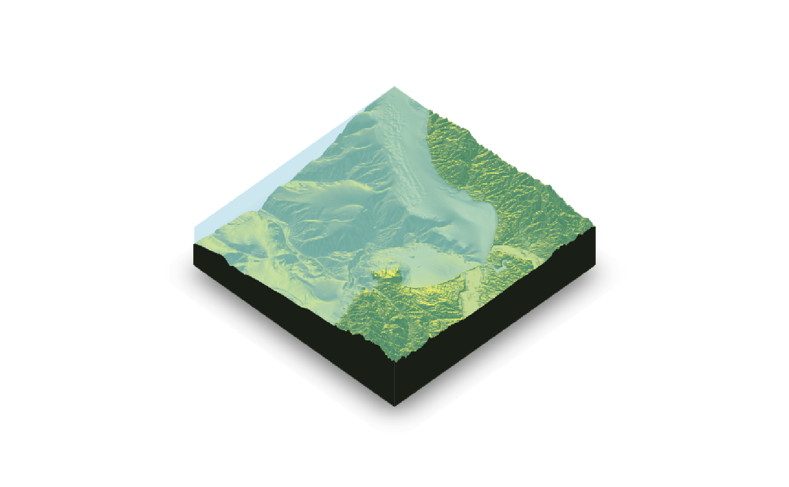
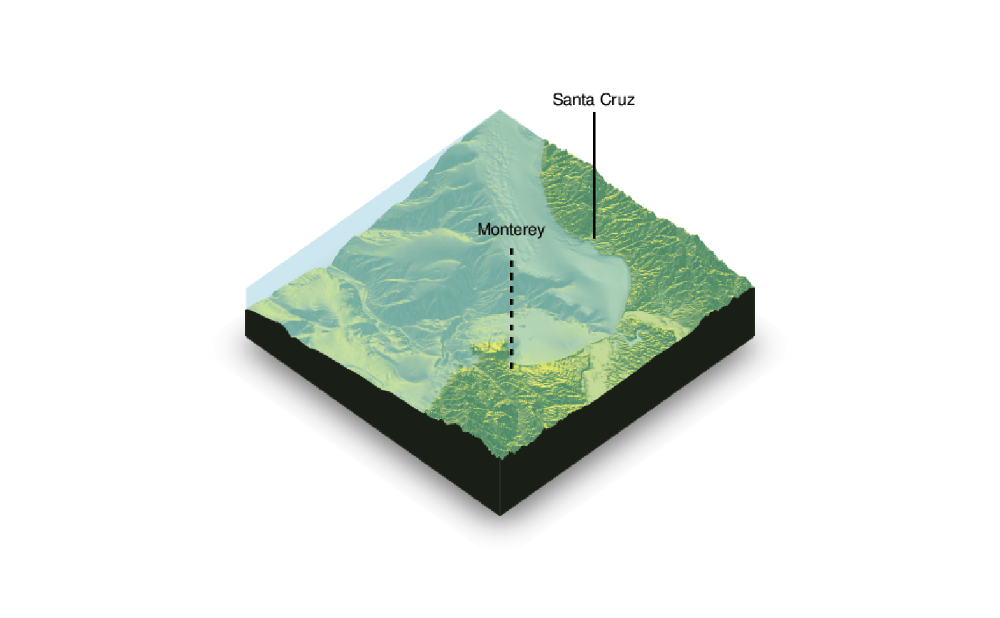
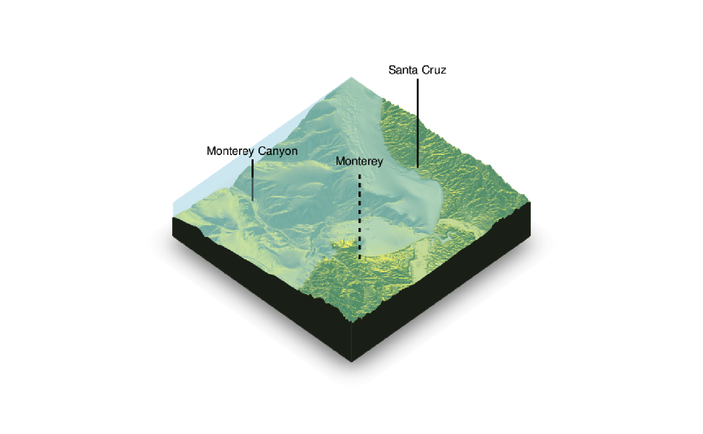

Adds a marker and label to the current 3D plot
render_label(heightmap, text, x, y, z, zscale = 1, relativez = TRUE, offset = 0, textsize = 1, dashed = FALSE, dashlength = "auto", linewidth = 3, antialias = FALSE, alpha = 1, textalpha = 1, freetype = TRUE, adjustvec = NULL, family = "sans", fonttype = "standard", color = "black", textcolor = "black")
| heightmap | A two-dimensional matrix, where each entry in the matrix is the elevation at that point. All points are assumed to be evenly spaced. |
|---|---|
| text | The label text. |
| x | Text `x` coordinate in the matrix. |
| y | Text `y` coordinate in the matrix. |
| z | Elevation of the label, in units of the elevation matrix (scaled by zscale). |
| zscale | Default `1`. The ratio between the x and y spacing (which are assumed to be equal) and the z axis. For example, if the elevation levels are in units |
| relativez | Default `TRUE`. Whether `z` should be measured in relation to the underlying elevation at that point in the heightmap, or set absolutely (`FALSE`). |
| offset | Elevation above the surface (at the label point) to start drawing the line. |
| textsize | Default `1`. A numeric character expansion value. |
| dashed | Default `FALSE`. If `TRUE`, the label line is dashed. |
| dashlength | Default `auto`. Length, in units of the elevation matrix (scaled by `zscale`) of the dashes if `dashed = TRUE`. |
| linewidth | Default `3`. The line width. |
| antialias | Default `FALSE`. If `TRUE`, the line with be have anti-aliasing applied. NOTE: anti-aliasing can cause some unpredictable behavior with transparent surfaces. |
| alpha | Default `1`. Transparency of the label line. |
| textalpha | Default `1`. Transparency of the label text. |
| freetype | Default `TRUE`. Set to `FALSE` if freetype is not installed (freetype enables anti-aliased fonts). NOTE: There are occasionally transparency issues when positioning Freetype fonts in front and behind a transparent surface. |
| adjustvec | Default `c(0.5,-0.5)`. The horizontal and vertical offset for the text. If `freetype = FALSE` and on macOS/Linux, this is adjusted to `c(0.33,-0.5)` to keep the type centered. |
| family | Default `"sans"`. Font family. Choices are `c("serif", "sans", "mono", "symbol")`. |
| fonttype | Default `"standard"`. The font type. Choices are `c("standard", "bold", "italic", "bolditalic")`. NOTE: These require FreeType fonts, which may not be installed on your system. See the documentation for rgl::text3d() for more information. |
| color | Default `black`. Color of the line. |
| textcolor | Default `black`. Color of the text. |
#We want to add a label to Santa Cruz, so we use the x and y matrix coordinate (x=220 and y=330)#We can also change the linetype to dashed by setting `dashed = TRUE` (additional options allow #the user to control the dash length)render_label(montereybay,x=300,y=120, z=10000,zscale=50,text = "Monterey",dashed=TRUE) render_snapshot()#By default, z specifies the altitude above that point on the elevation matrix. We can also specify #an absolute height by setting `relativez=FALSE`.render_label(montereybay,x=50,y=130, z=2000,zscale=50,text = "Monterey Canyon",relativez=FALSE) render_snapshot(clear = TRUE)